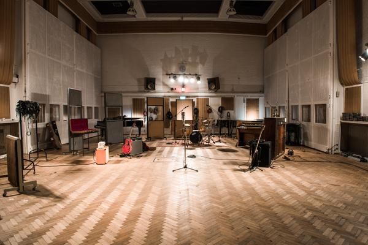

1. Abbey Road Studios – London

Abbey Road
Studios é o estúdio de gravação mais famoso do mundo e um ícone da música global.
Originalmente, uma casa de nove quartos construída em 1829 foi comprada pela Gramophone
Company em 1928, que passou a construir o primeiro estúdio de gravação do mundo. O endereço
St. John's Wood foi escolhido por seu grande jardim e localização ideal - perto o suficiente dos
espaços de atuação da época, mas longe do barulho e das vibrações do tráfego e dos trens.
A cerimônia de inauguração em 12 de novembro de 1931 incluiu uma apresentação de Land of
Hope & Glory no Studio One, conduzida por Sir Edward Elgar. A Gramophone Company fundiu-se
à Columbia Graphophone Company para formar as Indústrias Elétricas e Musicais (EMI) em 1931,
e os estúdios mais tarde ficaram conhecidos como EMI Recording Studios. Desde que o engenheiro
da EMI, Alan Blumlein, patenteou o aparelho de som na Abbey Road em 1931, os estúdios são
famosos pela inovação na tecnologia de gravação, amplamente desenvolvida pelo Departamento de
Desenvolvimento de Engenharia de Registros (REDD), que estava respondendo às necessidades dos
artistas e produtores que usavam as salas. Suas inovações incluem as mesas REDD e TG, bem como
técnicas de estúdio, como o Artificial Double Tracking (ADT), criado pelo técnico de estúdio Ken
Townsend, que se tornou o MD dos estúdios e vice-presidente do EMI Studios Group.
Embora inicialmente tenha sido palco de gravações clássicas, o repertório dos estúdios logo também
abrangeu jazz e grandes bandas, bem como os primeiros discos britânicos de rock & roll dos anos
1950, incluindo o primeiro single de Sir Cliff Richard, Move It. É claro que Abbey Road é sinônimo
do lendário trabalho dos Beatles, que trabalhou com o produtor da EMI Sir George Martin e gravou
190 de suas 210 músicas nos estúdios. Mas a história incomparável de Abbey Road abrange as
experiências selvagens do Pink Floyd até gravações icônicas de Shirley Bassey, Aretha Franklin,
The Hollies e muitos mais.